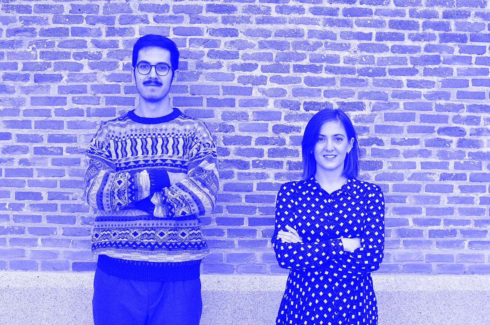

m²ft is an architecture practice established by Flavio Martella and Maria Vittoria Tesei, based in Madrid and Rome. Our approach relies on the awareness that architecture has to be able to consciously dialogue with contemporary issues and events, providing critical proposals and solutions that promote an enrichment of the current condition. This constant relationship with the current scene allows us to identify numerous scopes of intervention on different scales, which range goes from furniture design to planning on a more urban scale. We engage a broad range of activities including public and private design, urban planning and theoretical research, lectures, temporary architectures, ephemeral interventions, exhibition design, residential and domestic solutions.
The continuous research of the relationship with the social, economic, political, gender, artistic, territorial and landscape context allows to produce, in m²ft, architectures aware of the real needs. We believe it is fundamental to take into account that today everything is radically changed, and constantly changing. Our mission, is to be an active part of contemporaneity, and to find a strong point for developing new solutions, insisting on the critical role that architecture and urban interventions contribute to a shift of boundaries between public and private, domestic and urban, space and time, significantly improving people’s quality of life, creating vitality and rediscovering architecture's nature as a generator of life, before places.
m²ft carries out in parallel an intense research activity, both academically and professionally, that constantly supports and characterizes its work. This helps to explore the contemporary condition from different points of view and with different tools allowing to achieve a completeness that can better integrate m²ft’s work in the current context, but which can also use this context to empower architecture to influence and interpret society.

Flavio Martella is an architect and engineer, currently PhD student in Architecture and Urbanism at Polytechnic University of Madrid. He obtained his master’s degree in engineering and architecture at the University of Rome Tor Vergata, in 2015. He is invited lecturer for the Master in Collective Housing of the UPM and ETH. During the studies, especially thanks to the experience of a year of study in Spain, he develops a transversal awareness of the relationship between sociology, anthropology, politics and economics with architecture, which widen the canonical technical-theoretical university preparation. As soon as he graduated, he went to West Virginia University (USA) for 5 months to take part in an international research group for the development of a self-sustainable house, designing and building a prototype first presented at the 2015 Solar Decathlon, and now exposed at the Tellus Museum in Georgia. He returned to Europe and moved to the Netherlands where he had again the opportunity to confront the foreign working field, managing to produce, among other things, a socio-architectural research project presented at IABR2016 (International Architecture Biennale Rotterdam 2016). In a short stay in Rome he collaborates with the Roman studio 2a+p/a to design a pavilion for the Biennial of Orleans, now a fixed architecture of the Parc Floral de la Source in Orleans. After moving to Spain, he collaborated with Andrés Jaque on architectures now built and architectural research presented at the Seoul Architecture Biennial, the Victorian & Albert Hall Museum and the Tabacalera.
After being part of the design team of one of the main projects running in the city of Madrid, the new Headquarters of Metro Madrid, he officially founded m²ft in 2018 together with Maria Vittoria Tesei.
Maria Vittoria Tesei is an architect and urban designer. She received her five-year degree in Architecture at the Sapienza University of Rome in 2015 with a thesis held in Darmstadt, Germany, for the expansion of the artists residences of Rosenhöhe. After graduating, she moved to Rotterdam, The Netherlands, where she had the opportunity to work in internationally renowned architectural offices and to particularly deepen sustainable solutions in singular climatic contexts, especially related to the theme of residence.
In 2017, after having obtained the license for the profession of architect in Italy, she moved to Madrid, where she is collaborating with Ecosistema Urbano, a design and consulting company focused on social and sustainable urban design, where she works on architectural, urban revitalization, participation and research projects through the use of new technologies in the United States, South America and Europe.
This experience gives her the opportunity to deepen, also through her work with m²ft, topics such as the power of urban vitality, social inclusion and the importance of the “human scale” as fundamental parameters for the improvement of public space, architectural design and the quality of life of people in the urban environment.
Since 2018 she registered at the Architects Association of Madrid (COAM).
The same year, she officially founded m²ft together with Flavio Martella.